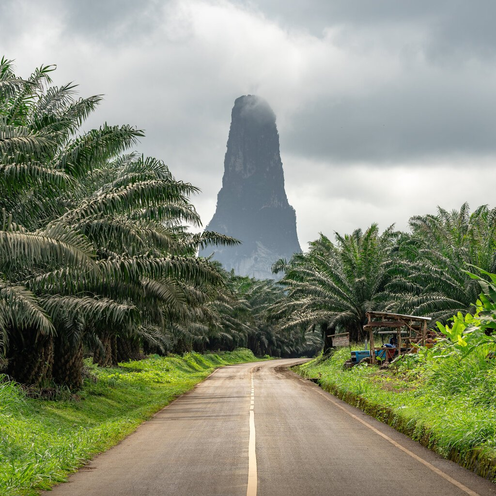
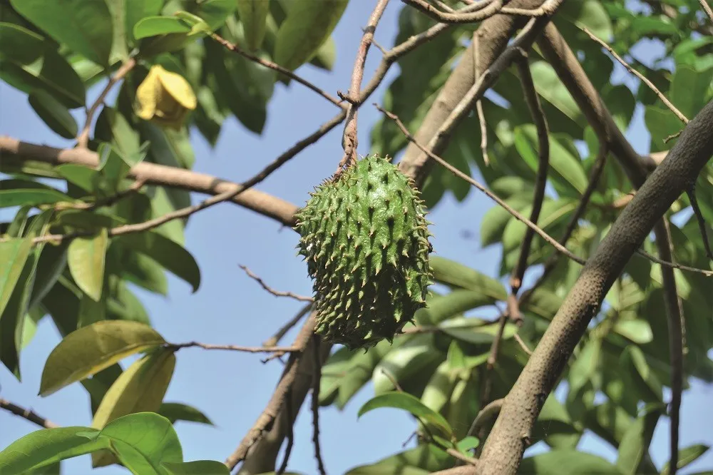
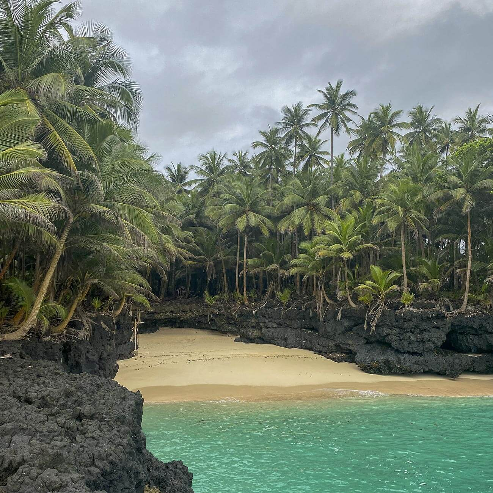

O que fazer em São Tomé e Príncipe:
- Explorar a cidade de São Tomé
- Visitar a Roça Agostinho Neto
- Visitar a Roça da Bela Vista
- Dar um mergulho na Praia dos Tamarindos
- Atravessar o Túnel de Santa Catarina
- Conhecer a CACAU – Casa das Artes Criação Ambiente e Utopias
- Visitar Claudio Corallo
- Visitar o Museu do Café (Roça Monte Café)
- Almoço de degustação na Casa Museu Almada Negreiros (Roça Saudade)
- Assistir a um espetáculo de Tchiloli
- Fazer o Roteiro da Boa Morte
- Fotografar a Boca do Inferno
- Conhecer as Histórias do Sul, em Porto Alegre

Comida a não perder:
- Ijogó
- Fruta-pão com peixe salgado
- Feijão à moda da Terra
- Nhame frito
- Molho no Fogo
- Soó de matabala
- Izaquente
- Obobô

Melhores praias para visitar:
- Praia Boi (Príncipe)
- Praia Macaco (Príncipe)
- Praia Bom Bom (Príncipe)
- Praia Banana (Príncipe)
- Praia Bateria (Ilhéu das Rolas)
- Praia Café (Ilhéu das Rolas)
- Praia Sundy (Príncipe)
- Praia Inhame (São Tomé)
- Praia Piscina (São Tomé)
- Praia Jalé (São Tomé)
- Praia dos Tamarindos (São Tomé)